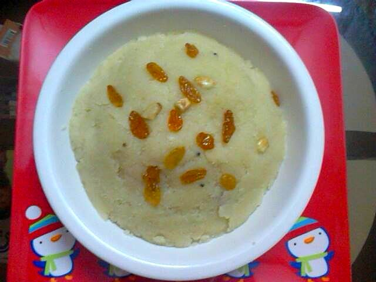

Contains: milk, gluten, egg, tree nuts
Checked against the ingredient list for milk, egg, fish, crustaceans, tree nuts, peanuts, sesame, mustard, soy and gluten. Nothing else is checked, and brands vary, so read the label on anything you have not bought before.
Ingredients
Quantities for 4.
- 80g, fine semolina Rava
- 750ml, full fat Milk
- 3 tbsp Ghee
- 90g Sugar
- 1, beaten Eggsthe traditional enrichment; leave out for an egg-free ravooptional
- 3/4 tsp, ground Cardamom
- 1/4 tsp, grated Nutmeg
- 2 tbsp Raisinsoptional
- 12, slivered Almondsoptional
- 1/2 tsp Rose Wateroptional
- 1 pinch Salt
Cookware
stovetop
Before you start
- Warm the milk in a separate pan and keep it hot. Cold milk hitting hot semolina makes lumps that never disperse.
- Bring the egg to room temperature and beat it smooth before you need it.
- Measure everything out first; once the semolina is roasted the dish moves quickly.
Method
- Heat 2 tbsp ghee in a heavy pan and fry the raisins for 30 seconds until they puff, then lift them out.
- Fry the slivered almonds in the same ghee for 45 seconds until pale gold and set them aside with the raisins.
- Add the remaining ghee and the semolina and roast over low heat for 6 to 8 minutes, stirring constantly, until it smells nutty and turns the colour of pale sand.Low heat and constant stirring. Semolina scorches at the base without warning and the burnt note carries through the whole pudding.
- Pour in the hot milk in a thin stream, whisking hard the whole time.Whisk, do not stir. This is the only moment lumps can form, and once they do they stay.
- Add the pinch of salt and simmer 6 to 8 minutes, stirring, until the semolina swells and the mixture coats the back of a spoon.
- Stir in the sugar and cook 3 minutes more; it will loosen at first and then thicken again.
- Take the pan off the heat, let it cool for 2 minutes, then whisk in the beaten egg quickly and return to very low heat for 2 minutes.Off the boil, whisking fast. Otherwise the egg sets into threads instead of enriching the pudding.
- Stir in the cardamom, nutmeg and rose water, and thin with a splash of hot milk if it has gone past pourable.
- Spoon into bowls, top with the fried raisins and almonds, and serve warm.
Storage
Keeps 2 days refrigerated. It sets firm when cold. Reheat gently with 3 to 4 tbsp of milk and whisk it back to a soft, spoonable consistency.
Nutrition Good estimate
| Per serving269 g | Per 100 g | |
|---|---|---|
| Calories | 424 kcal | 158 kcal |
| Protein | 11.2 g | 4 g |
| Carbohydrate | 53.9 g | 20 g |
| of which sugars | 37.3 g | 14 g |
| Fibre | 1.8 g | 1 g |
| Fat | 19.0 g | 7 g |
| of which saturated | 10.1 g | 4 g |
| of which unsaturated | 7.4 g | 3 g |
Worked out from the listed quantities; most of the ingredient list could be weighed. Estimated from raw ingredients using USDA FoodData Central. Cooking changes are not modelled, and added salt is excluded, so sodium is not given.
Recipe v1.0.0, last updated 2026-07-31. Curated for Khaana and kept under version control.